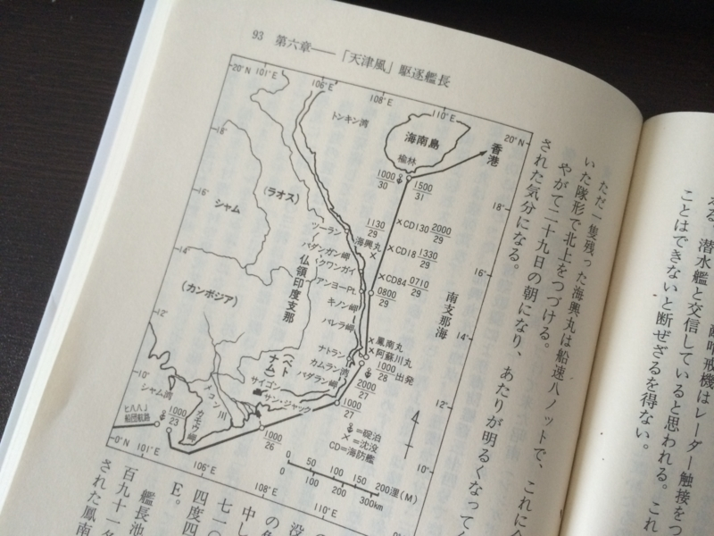

『25歳の艦長海戦記―駆逐艦「天津風」かく戦えり』
公開日：
")
25歳の艦長海戦記―駆逐艦「天津風」かく戦えり (光人社NF文庫)
- 作者: 森田友幸
- 出版社/メーカー: 光人社
- 発売日: 2004/10/01
- メディア: 文庫
- クリック: 3回
- この商品を含むブログ (4件) を見る
宇和島へ向かう特急「宇和海」の中で読破。なんでこの本を手に取ったのかというと、
まぁ、こういうわけなんですよね。このツンデレがどんな戦いをしたのか、見届けてやろう。
本書は内容的に3部構成になるのかな。
- 駆逐艦「霞」の水雷長時代（捷一号作戦と礼号作戦）
- 駆逐艦「天津風」の艦長時代（「ヒハハJ」船団と「ホモ〇三」船団）
- 泗礁山部隊の指揮官時代
駆逐艦「霞」時代の話は、『キスカ島 奇跡の撤退: 木村昌福中将の生涯』 - だるろぐ とカブるところもあるので割愛。で、メインの「天津風」の話だけど――登場したときには魚雷で船首部分を砕かれ、応急の艦首をつけたサイボーグ状態だった ／(＾o＾)＼

（だいたいこんな感じっぽい）
「天津風」は一番煙突から前部が戦没、残った船体は一番煙突から後部の六十七・五メートル、罐（ボイラー）は三罐中一缶が健在、機械（推進器を含む）は完全、発揮可能速力二十ノット（船体強度からの制約）。
一応、仮の艦首と艦橋がつけてあるが、主砲は十二・七センチ砲が６門から４門に減り、指揮装置である方位板が艦橋とともに失われているため、照準は砲側で当てずっぽうにやるしかない。また、推測兵器の装備がないため、潜水艦の発見は目視に頼るしかない。機銃は多少増強されたが、十分ではない。
（極端に前部が寸詰まりになった「天津風」）
けれど、海軍としては「天津風」はただの陽炎型駆逐艦ではない。特製の高温高圧缶を搭載した、貴重なプロトタイプ。是非とも内地に回航して、完全に修理しかかった。そこで、海防艦などに護衛されて内地に物資を運ぶ「ヒハハJ」船団に便乗させてもらって、内地に向かうことになった。

（×印があるのが、戦没艦の位置）
結果は惨憺たるもので、敵攻撃機の空襲を何度も減るうちに艦艇は漸減。最後は「天津風」１艦になってしまう。
（B-25 Mitchell skip-bombs a Japanese Kaibokan escort ship, 1945 より。攻撃されているのは「天津風」とされているけれど、前部砲塔があるし、本書の掲載写真と見比べるに、どうやら第一号海防艦っぽい）
「天津風」は大破した僚船「満珠」（択捉型海防艦）から機銃を譲り受けて対空性能を強化。なんとか B-25 を撃退して厦門港にたどりつくも、そこで力尽きて擱座する。1945年4月10日。
海防艦についてわりかし詳しく書いてあったのが面白かった。あと、対空戦闘の割りの合わなさへの言及が印象深い。
これらの装備をみると、たかが中型機一機というのは、実態を知らぬ人の言い分で、優に海防艦一隻の戦力を上回っている。
しかもかたや乗員六名、海防艦は百八十名。一艦を失うことは三十倍の戦闘員を失うことであり、繰り返しになるが、まったくわりの合わない戦闘である。